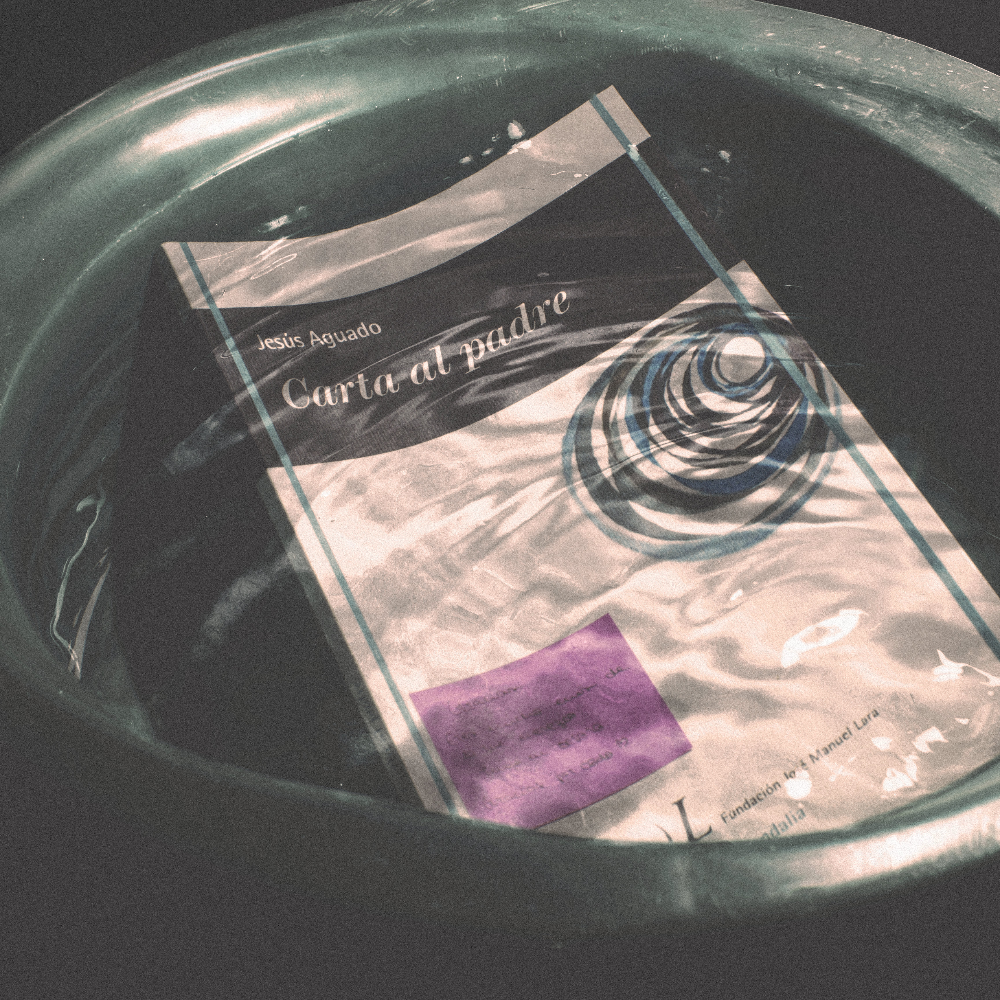

De sombras y recuerdos.


La luz que desprendes.


De la luna al pantano.


Viajar.


Caer desde el balcón.


Perdón Teatro.


Córdoba, arte y ...


Una Noche Normal.


Más que una fotografía, o no.


De una película, sueño.